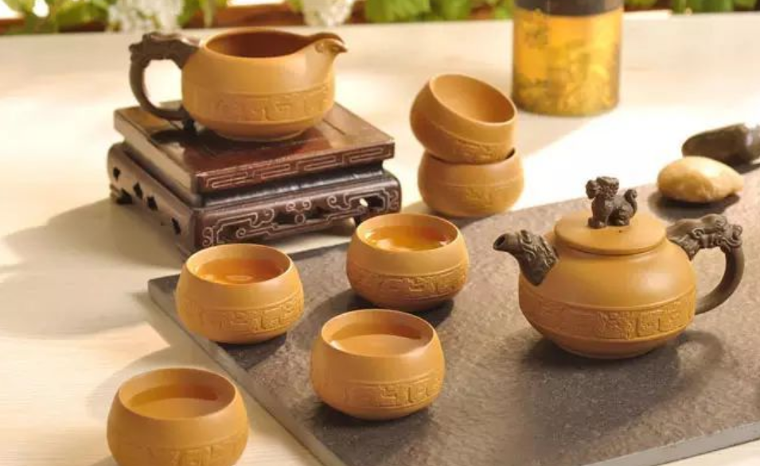
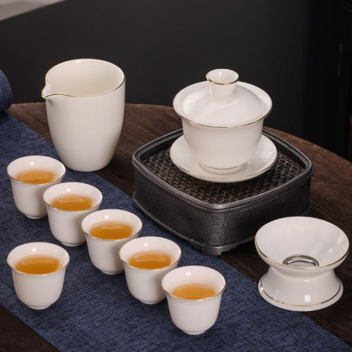
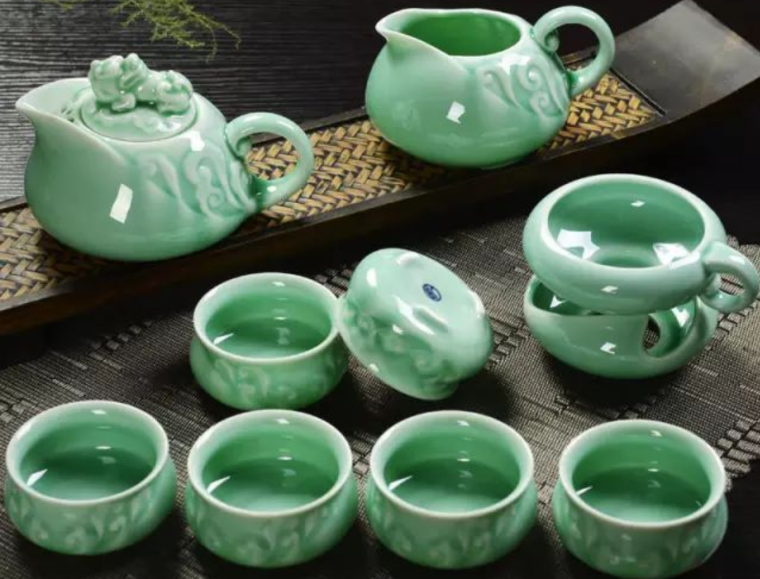
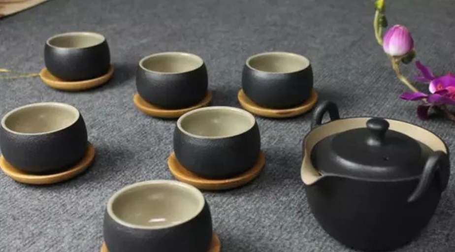
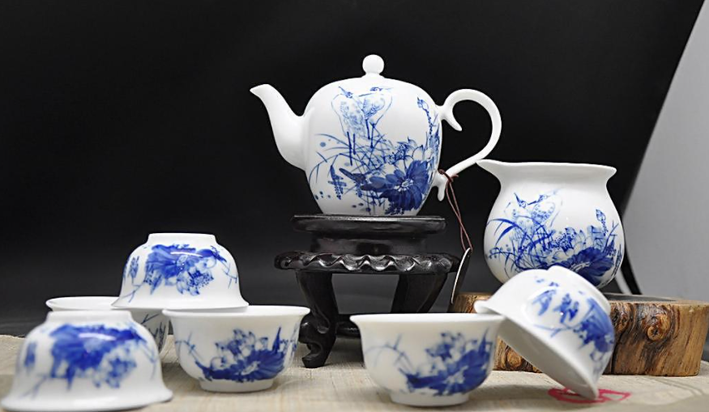
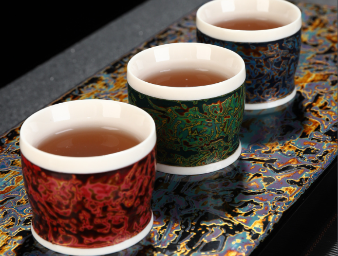
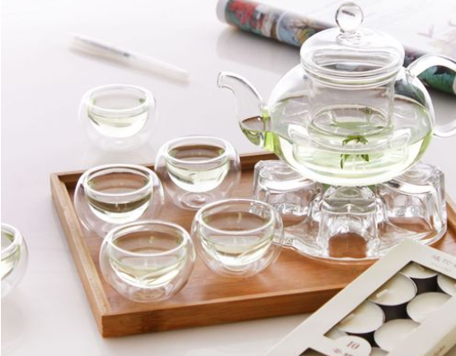
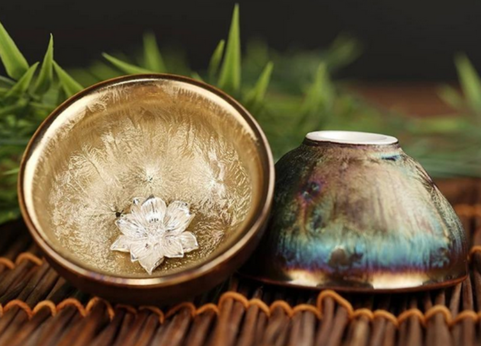
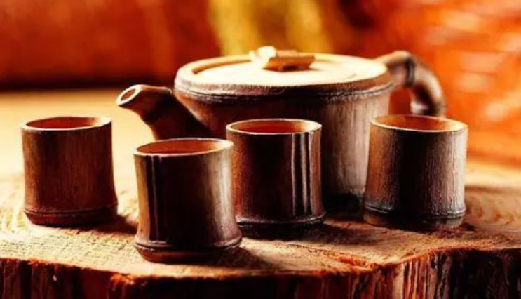
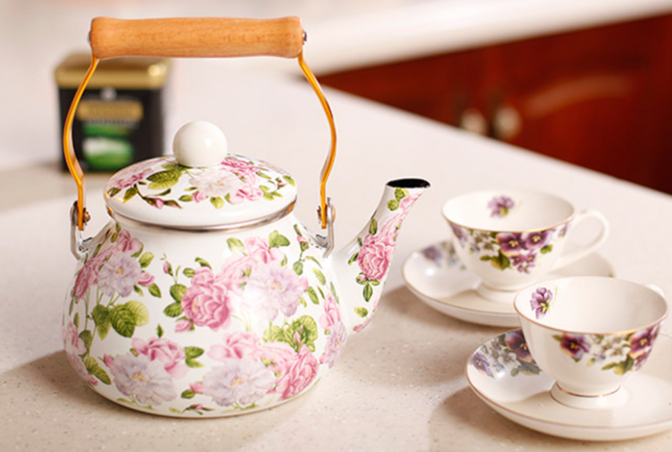

正正：一起喝茶吧！(*^▽^*)
正正：一起喝茶吧！(*^▽^*)
茶具，古代亦称茶器或茗器。茶具是所有泡茶过程中必备的器具，不单指茶壶、茶杯，被认为对茶的品质有着莫大的影响。我国的茶具，种类繁多，造型优美，既有实用价值，又富艺术之美。就中国茶具的材质，将中国的茶具进行分类。
陶器中的佼佼者首推宜兴紫砂茶具，早在北宋初期就已崛起，成为别树一帜的优秀茶具，明代大为流行。紫砂壶和一般的陶器不同，其里外都不敷釉，采用当地的紫泥、红泥、团山泥抟制焙烧而成。由于成陶火温高，烧结密致，胎质细腻，既不渗漏，又有肉眼看不见的气孔，经久使用，还能汲附茶汁，蕴蓄茶味﹔且传热不快，不致烫手﹔若热天盛茶，不易酸馊﹔即使冷热剧变，也不会破裂﹔如有必要，甚至还可直接放在炉灶上煨炖。
瓷器发明之后，陶质茶具就逐渐为瓷器茶具所代替。瓷器茶具又可分为白瓷茶具、青瓷茶具和黑瓷茶具等。
白瓷茶具坯质致密透明，上釉、成陶火度高，无吸水性，音清而韵长等特点。因色泽洁白，能反映出茶汤色泽，传热、保温性能适中，加之色彩缤纷，造型各异，堪称饮茶器皿中之珍品。
青瓷茶具以浙江生产的质量最好。早在东汉年间，已开始生产色泽纯正、透明发光的青瓷。晋代浙江的越窑、婺窑、瓯窑已具相当规模。宋代，作为当时五大名窑之一的浙江龙泉哥窑生产的青瓷茶具，已达到鼎盛时期，远销各地。明代，青瓷茶具更以其质地细腻，造型端庄，釉色青莹，纹样雅丽而蜚声中外。
黑瓷茶具始于晚唐，鼎盛于宋，延续于元，衰微于明、清，这是因为自宋代开始，饮茶方法已由唐时煎茶法逐渐改变为点茶法，而宋代流行的斗茶，又为黑瓷茶具的崛起创造了条件。宋人衡量斗茶的效果，一看茶面汤花色泽和均匀度，以"鲜白"为先；二看汤花与茶盏相接处水痕的有无和出现的迟早，以"盏无水痕"为上。时任三司使给事中的蔡襄，在他的《茶录》中就说得很明白:"视其面色鲜白，著盏无水痕为绝佳；建安斗试，以水痕先者为负，耐久者为胜。"而黑瓷茶具，正如宋代祝穆在《方舆胜览》中说的"茶色白，入黑盏，其痕易验"。
彩瓷茶具品种花色很多，其中尤以青花瓷茶具最引人注目。它的特点是花纹蓝白相映成趣，有赏心悦目之感；色彩淡雅幽菁可人，有华而不艳之力。加之彩料之上涂釉，显得滋润明亮，更平添了青花茶具的魅力。
采割天然漆树液汁进行炼制，掺进所需色料，制成绚丽夺目的器件，这是我国先人的创造发明之一。我国的漆器起源久远，在距今约7000年前的浙江余姚河姆渡文化中，就有可用来作为饮器的木胎漆碗，但尽管如此，作为供饮食用的漆器，包括漆器茶具在内，在很长的历史发展时期中，一直未曾形成规模生产。特别自秦汉以后，有关漆器的文字记载不多，存世之物更属难觅，这种局面，直到清代开始，才出现转机，由福建福州制作的脱胎漆器茶具日益引起了时人的注目。
福州生产的漆器茶具多姿多彩，有宝砂闪光、金丝玛瑙、釉变金丝、仿古瓷、雕填、高雕和嵌白银等品种，特别是创造了红如宝石的赤金砂和暗花等新工艺以后，更加鲜丽夺目，逗人喜爱。
玻璃，古人称之为流璃或琉璃，实是一种有色半透明的矿物质。用这种材料制成的茶具，能给人以色泽鲜艳，光彩照人之感。我国的琉璃制作技术虽然起步较早，但直到唐代，随着中外文化交流的增多，西方琉璃器的不断传入，我国才开始烧制琉璃茶具。陕西扶风法门寺地宫出土的由唐僖宗供奉的素面圈足淡黄色琉璃茶盏和玻璃茶具素面淡黄色琉璃茶托，是地道的中国琉璃茶具，虽然造型原始，装饰简朴，质地显混，透明度低，但却表明我国的琉璃茶具唐代已经起步，在当时堪称珍贵之物。
在现代，玻璃器皿有较大的发展。玻璃质地透明，光泽夺目，外形可塑性大，形态各异，用途广泛。玻璃杯泡茶，茶汤的鲜艳色泽，茶叶的细嫩柔软，茶叶在整个冲泡过程中的上下穿动，叶片的逐渐舒展等，可以一览无余，可说是一种动态的艺朮欣赏。
金属茶具是指由金、银、铜、铁、锡等金属材料制作而成的器具。它是我国最古老的日用器具之一，早在公元前18世纪至公元前221年秦始皇统一中国之前的1500年间，青铜器就得到了广泛的应用，先人用青铜制作盘盛水，制作爵、尊盛酒，这些青铜器皿自然也可用来盛茶。自秦汉至六朝，茶叶作为饮料已渐成风尚，茶具也逐渐从与其他饮具共用中分离出来。大约到南北朝时，我国出现了包括饮茶器皿在内的金银器具。到隋唐时，金银器具的制作达到高峰。本世纪80年代中期，陕西扶风法门寺出土的一套由唐僖宗供奉的鎏金茶具，可谓是金属茶具中罕见的稀世珍宝。但从宋代开始，古人对金属茶具褒贬不一。
元代以后，特别是从明代开始，随着茶类的创新，饮茶方法的改变，以及陶瓷茶具的兴起，才使包括银质器具在内的金属茶具逐渐消失，尤其是用锡、铁、铅等金属制作的茶具，用它们来煮水泡茶，被认为会使"茶味走样"，以致很少有人使用。但用金属制成贮茶器具，如锡瓶、锡罐等，却屡见不鲜。这是因为金属贮茶器具的密闭性要比纸、竹、木、瓷、陶等好，具有较好的防潮、避光性能，这样更有利于散茶的保藏。
隋唐以前，我国饮茶虽渐次推广开来，但属粗放饮茶。当时的饮茶器具，除陶瓷器外，民间多用竹木制作而成。陆羽在《茶经·四之器》中开列的28种茶具，多数是用竹木制作的。这种茶具，来源广，制作方便，对茶无污染，对人体又无害，因此，自古至今，一直受到茶人的欢迎。
但缺点是不能长时间使用，无法长久保存，失却文物价值。只是到了清代，在四川出现了一种竹编茶具，它既是一种工艺品，又富有实用价值，主要品种有茶杯、茶盅、茶托、茶壶、茶盘等，多为成套制作。
搪瓷茶具以坚固耐用，图案清新，轻便耐腐蚀而著称。它起源于古代埃及，以后传入欧洲。但现在使用的铸铁搪瓷始于19世纪初的德国与奥地利。搪瓷工艺传入我国，大约是在元代。明代景泰年间(公元1450-1456年)，我国创制了珐琅镶嵌工艺品景泰蓝茶具，清代乾隆年间公元1736-1795年)景泰蓝从宫廷流向民间，这可以说是我国搪瓷工业的开始。
当然，中国历史上还有用玉石、水晶、玛瑙等材料制作的茶具，但总的来说，在茶具史上仅居较次要的地位。
网站制作者：郑越匀